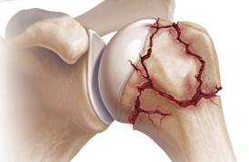
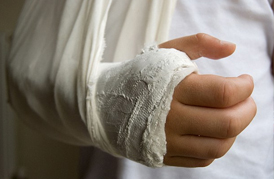
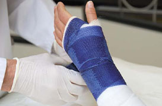
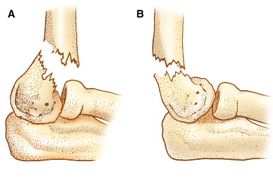
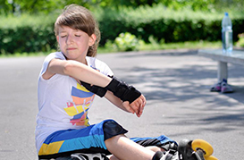
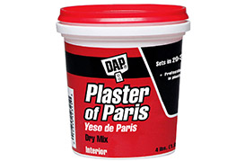

Overview
FRACTURE OF THE BONE IN THE UPPER ARM (HUMERUS) IN CHILDREN

How Could This Bone Be Broken ?
The humerus commonly breaks at three places. They are
- Near the shoulder joint
- middle part of the bone
- near the elbow joint

How Could This Be Treated ?
Fractures near the shoulder joint
Fractures of this area are treated without operation in usual case. Immobilization of the arm with a shoulder immobilizer, plaster of Paris cast applied to forearm as a weight will maintain the alignment.
Fractures in the middle part of the bone
Nearly all of the fractures of this part of the bone treated with simple immobilization. The upper arm and the elbow joint will be immobilized with a plaster of Paris half cast.
Fractures near the elbow
Please Read Supracondylar fracture
How Long Will It Take To Heal ?
Both fracture types will heal in a period of 3-4 weeks.
Will There Be Deformity ?
Usually no. most of the leftover deformity get corrected automatically with time.

Does The Plaster Need Changing ?
The plaster loosens as swelling settles. If we find it too loose, a new plaster will be done
How Would You Know If The Bone Pieces Are In Place ?
X-rays are done at intervals to make sure the bones are in correct place.
Will The Child Need Physiotherapy ?
The shoulder and the elbow might be stiff when the plaster is removed. Children gradually start moving the joint. However some might need few sessions of physiotherapy to regain full range of joint motion.
When Can The Contact Sports Begun ?
It should be fine after 8-10 weeks
Will These Two Fracture Types Ever Need Operation ?
It would rarely. One instance is fracture near the shoulder joint with complete displacement of broken ends. (off-ended). These can be fixed with two pins after restoring normal shape of the bone.
Fracture involving the middle part can be fixed with a wire sent inside the bone through a small opening made near the upper/lower end of the bone.
SUPRACONDYLAR FRACTURE HUMERUS IN CHILDREN

Which Part Of The Bone Is Broken ?
This is the part of the bone in the upper arm, very close to the elbow joint.
Why Is This An Important Fracture ?
This fracture is commonly seen in the age group of 4-9 years.
Fracture could be a simple crack to a completely displaced one with broken ends not touching each other at all.
In the second instance, the broken sharp edge of the bone could damage the nearby nerves and blood vessels running to the forearm. Therefore the forearm might not get an adequate oxygen supply. These can only be recognized by a qualified doctor.
How Could This Happen ?
The injury is common after falls from little heights.

What Should I Do ?
You could splint the arm as it is with a suitable device/piece of wood wrapped with a cloth
Please seek urgent medical advice

What Is The Treatment For Collar Bone Fractures?
The regular fracture will only need immobilization of the clavicle for six weeks. This is commonly achieved with a commercially available clavicular brace. This is ready made garment which can be taken off for short periods of hygienic purposes. It needs to be worn with certain tightness to be fully effective.
What I SHOULD NOT DO ??
Apply any type of herbal oils/pastes.
Seek help of alternative medicine.
Mislead by advices of your nonmedical friends, family members forcing you to go for alternative medical treatment
Will This Fracture Need Operation ?
Every fracture of this type will not need operation

Should I Be Scared Of Plaster Of Paris
Not at all. The purpose of applying it is to help the body to keep the arm/leg still. This is similar to placing few strips of bamboo around the limb and wrapping it with a layer of cloth.
However, plaster of Paris is far more superior to this. It can be molded to suit the size and the shape of the limb.
What Problems Can Arise ?
This will depend on how bad the original injury
- Simple cracks heal without a problem. Stiffness of the elbow will go off with time or few sessions of physiotherapy
- Results will be the same with manipulated and operated ones.
- However a second operation may be needed if we think the deformity is not adequately corrected.
- Sites where the pins go through the skin may get infected. This settles with antibiotics/creams
- There will be residual stiffness which sometimes is much difficult to overcome.
- It will take some time to get back to full range of elbow motion.
- In rare cases calcium deposition may be seen around the elbow making it impossible to move the joint at all. It is not possible to predict who will get this. However it is commonly seen following application of herbal oils and pastes by bone setters.
How Long Is The Hospital Stay ?
2-3 days

How Long Will It Take To Heal ?
It heals in three weeks. Pins when used to fix the fracture will be taken off at 4-6 weeks.
When Can The Activity Begun ?
As soon as the plaster half cast is removed, motion can be started.
What Will Happen With Alternative Treatment?
Chances of you getting one or many of the complication are very high.
The fracture will heal in an awkward position giving the arm an abnormal shape and abnormal elbow movement.
The correction of such deformity will need a bigger operation. We may not be able to get back to 100% normal.
If reduced oxygen supply go unnoticed the forearm and hand with thin out with time and hand will developed contractures causing difficulties with finger movement.